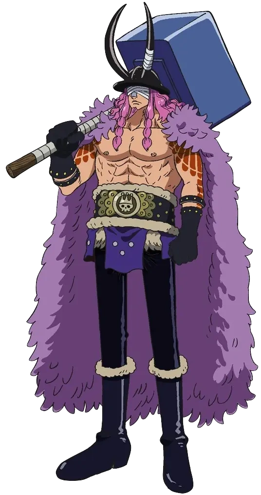
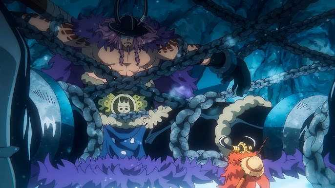
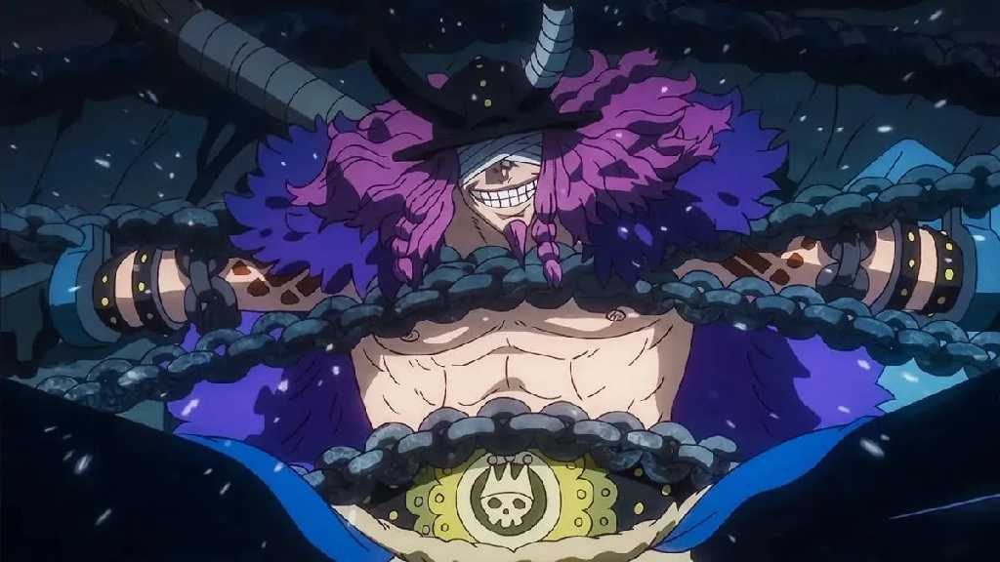

Mythic silhouette
Loki’s visual language leans into the scale and folklore of Elbaf: a giant body, a severe presence, and a design that reads as both royal and dangerous. For cosplay, shape and stance matter as much as individual accessories.
Royalty, confinement, and a name built for misdirection: a careful profile of Elbaf’s “Accursed Prince.”

Watch the licensed series page on Crunchyroll. Check the licensed series page for current regional access.
Open CrunchyrollLoki is introduced as a giant prince of Elbaf, the giant homeland at the centre of the current storyline. The story also presents him as the “Accursed Prince” and places him in confinement in Elbaf’s Underworld. His public image is shaped by the accusation that he killed his father, King Harald; the circumstances and meaning of that history are part of the story’s ongoing dramatic reveal.
Key facts are Loki’s royal status, giant identity, the Accursed Prince title, imprisonment, and connection to Harald.
Loki’s visual language leans into the scale and folklore of Elbaf: a giant body, a severe presence, and a design that reads as both royal and dangerous. For cosplay, shape and stance matter as much as individual accessories.
The prince title sits against the “Accursed” label. That contrast makes the character feel deliberately unstable: public legend, family history, and personal truth do not automatically align.
Confirmed role: Loki is a prince of Elbaf and a significant figure in the Elbaf arc. He is associated with the Underworld prison and the conflict around King Harald’s death.
Confirmed in the story: giant prince of Elbaf; called the Accursed Prince; imprisoned in the Underworld; son of King Harald; introduced during the Elbaf storyline; meets Luffy.
Theory: that Loki becomes the tenth Straw Hat, that he joins the crew, or that any particular power/prophecy guarantees that outcome. These are fan interpretations, not announcements.
Do you think Loki becomes the tenth Straw Hat?
0 votes recorded on this device.
Loki’s full character debut is identified as One Piece chapter 1130, during the Elbaf storyline.
The story establishes Loki as the giant prince held in Elbaf’s Underworld, introduces the “Accursed Prince” label, and ties his history to the death of King Harald. His encounter with Luffy creates a direct bridge between the Straw Hats and Elbaf’s royal conflict.
Loki’s unusual scale, royal status, confinement, and narrative importance define his role in the Elbaf storyline.
Loki functions as a pressure point in the Elbaf narrative: he is simultaneously a royal heir, a condemned figure, and a person whose version of events must be weighed against the community’s public story. That makes him important beyond a simple power ranking. His presence asks who controls a legend, who benefits from a label, and whether a kingdom can separate justice from inherited fear.
Spoiler warning: this profile discusses Elbaf story material. The source links below provide official reading and viewing options.
Licensed anime · CrunchyrollOfficial manga · VIZOfficial manga · MANGA Plus
Official video: Elbaph Arc Official Trailer · ONE PIECE (external YouTube link).



Documented epithet: “The Accursed Prince” is Loki’s title in official promotional material.
Reputation is not the same as truth; inherited status does not remove responsibility; and unresolved history deserves careful attention before judgment.
Loki’s isolation, public label, family pressure, and desire to be understood shape his appeal to readers.
His continued presence in the Elbaf conflict shows that a difficult beginning does not settle a person’s entire story.